Starting from random noise and running the iterative denoising loop produces samples directly from the pretrained diffusion model. The figure below shows the sampled outputs requested for Section 1.5.
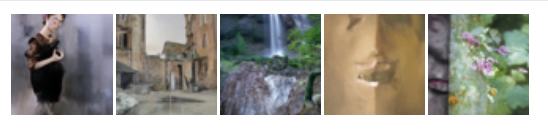
output/partA/1.5_image_stack.png
Classifier-free guidance improves image quality by combining conditional and unconditional predictions during denoising. Compared with unguided sampling, the outputs are typically sharper and more aligned with the prompt.
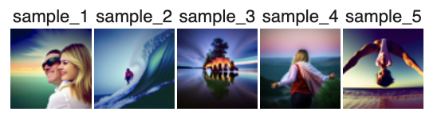
output/partA/1.6_image_stack.png
For image-to-image translation, a real image is first noised to an intermediate diffusion timestep and then denoised back. Lower noise levels preserve more of the input structure, while higher noise levels allow the model to make stronger edits.
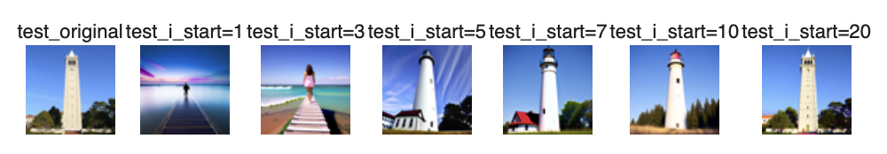
output/partA/1.7_test_img.png
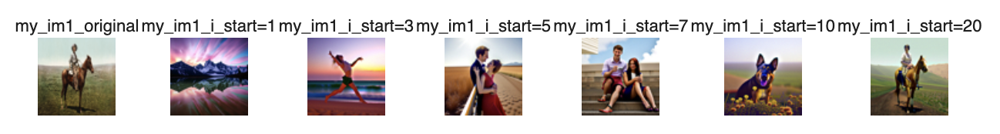
output/partA/1.7_my_img_1.png
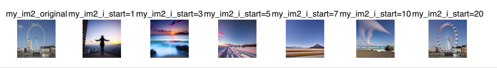
output/partA/1.7_my_img_2.png
This section applies the same image-to-image pipeline to non-photorealistic inputs. The goal is to project sketches and a web image onto the natural image manifold while varying the noise level over values such as 1, 3, 5, 7, 10, and 20.
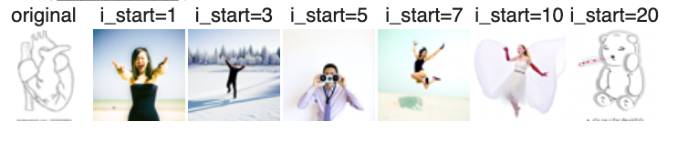
output/partA/1.7.1_web_img.png
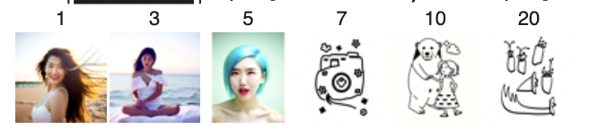
output/partA/1.7.1_my_img_1.png
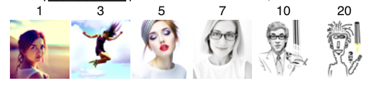
output/partA/1.7.1_my_img_2.png
Inpainting keeps the unmasked part of the image fixed while letting the diffusion model regenerate masked regions. Below are the Campanile result and two additional masked edits.
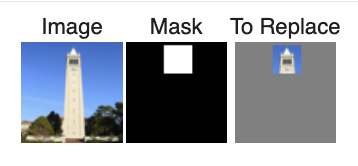
output/partA/1.7.2_campanile.png
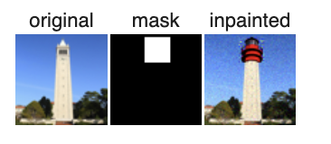
output/partA/1.7.2_campanile_inpainted.png
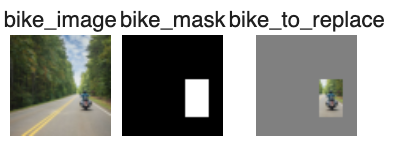
output/partA/1.7.2_road.png
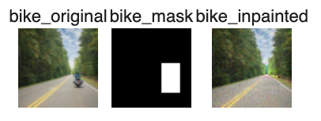
output/partA/1.7.2_road_inpainted.png
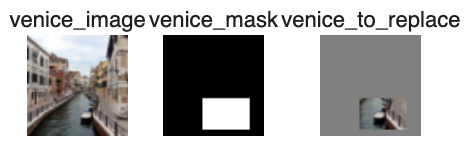
output/partA/1.7.2_venice.png
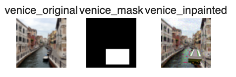
output/partA/1.7.2_venice_inpainted.png
Here the denoising process is guided not only by the starting image but also by a prompt embedding. This lets the model preserve broad structure from the input while steering the output toward the requested text condition.
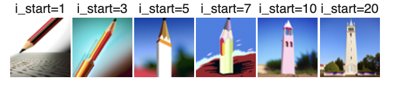
output/partA/1.7.3_companile.png
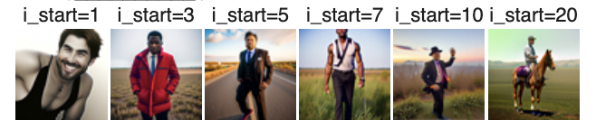
output/partA/1.7.3_my_img_1.png
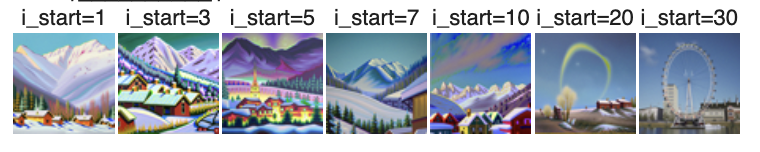
output/partA/1.7.3_my_img_2.png
Visual anagrams are constructed so that one interpretation appears in the original orientation and a second interpretation appears after a transformation. Below are two illusion results included for this part.
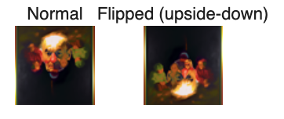
output/partA/1.8_img_1.png
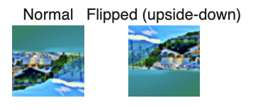
output/partA/1.8_img_2.png
Hybrid images combine coarse low-frequency structure from one image with high-frequency details from another. This section also includes the Roar-ee image-to-image result that was generated for Columbia's mascot prompt.
output/partA/1.9_img_1.png
output/partA/1.9_img_2.png
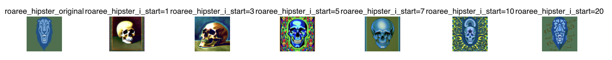
output/partA/2_roaree_skull.png
Clean MNIST images are corrupted via z = x + σε where ε ~ N(0, I). We visualize σ ∈ {0.0, 0.2, 0.4, 0.5, 0.6, 0.8, 1.0} on a single digit.
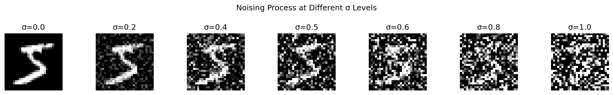
output/partB/1.2_noising_process.png
An unconditional UNet is trained to map noisy images (σ = 0.5) back to their clean counterparts using an L2 loss. Noise is sampled fresh each iteration for better generalisation.
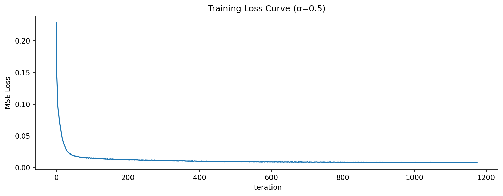
output/partB/1.2.1_training_loss_curve.png
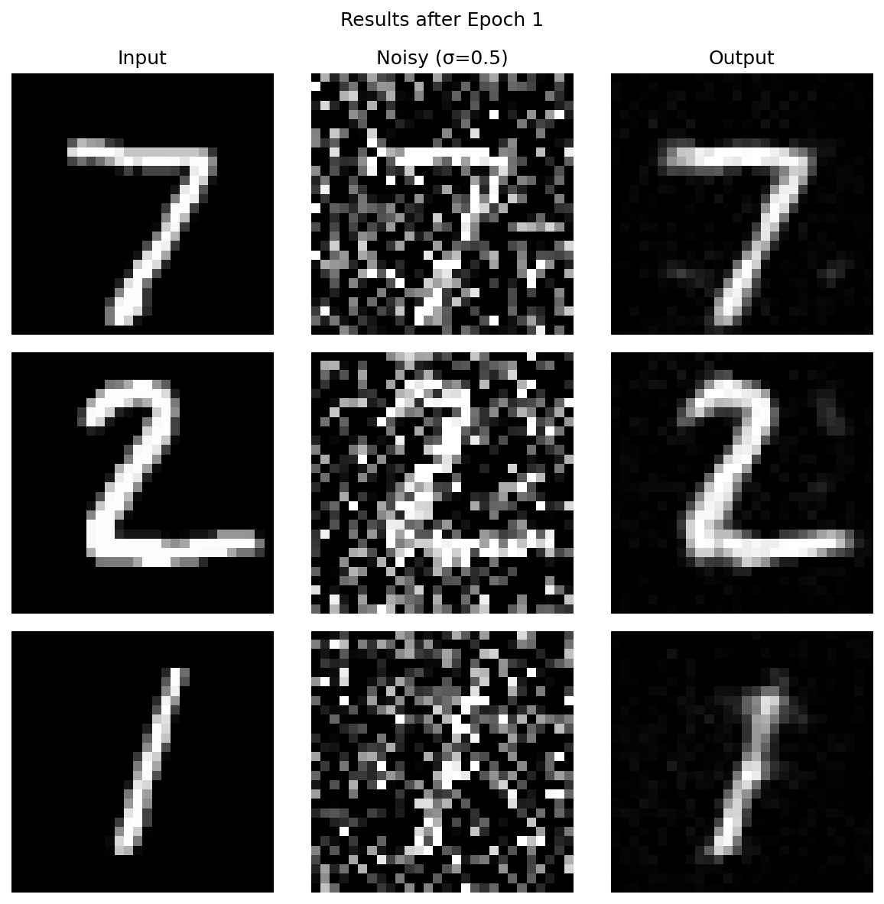
output/partB/1.2.1_denoising_epoch_1.png
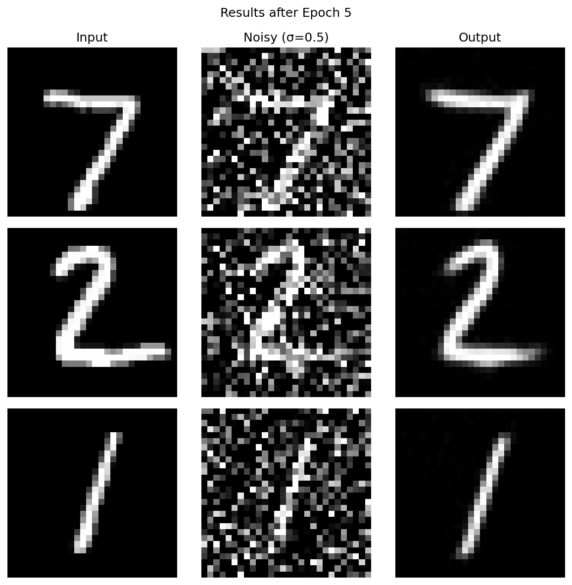
output/partB/1.2.1_denoising_epoch_5.png
The denoiser trained at σ = 0.5 is evaluated on σ ∈ {0.0, 0.2, 0.4, 0.5, 0.6, 0.8, 1.0} to understand how performance degrades outside the training distribution.
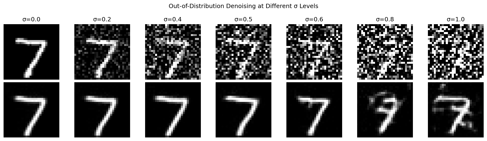
output/partB/1.2.2_ood_testing.png
The UNet is retrained with pure Gaussian noise ε ~ N(0, I) as input and a clean MNIST digit as target. Since the input carries no class information, the model learns to output the mean of the training distribution.
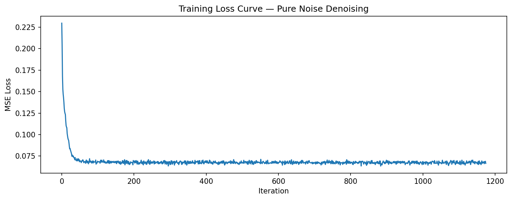
output/partB/1.2.3_training_loss_pure_noise.png
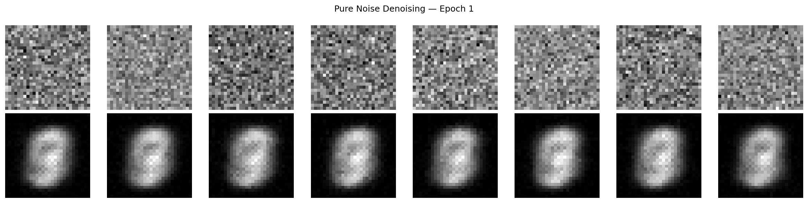
output/partB/1.2.3_pure_noise_epoch_1.png
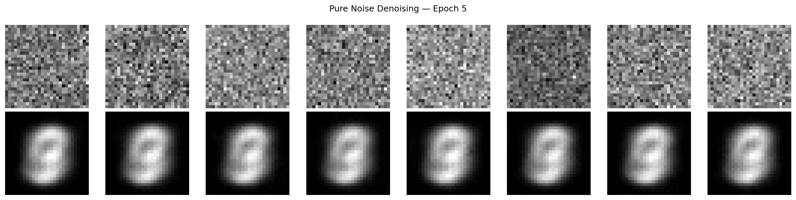
output/partB/1.2.3_pure_noise_epoch_5.png
Flow matching trains uθ(xt, t) to predict the velocity field x₁ − x₀ along linear interpolations between noise and clean data. Euler integration from t = 0 → 1 recovers a realistic sample at inference.
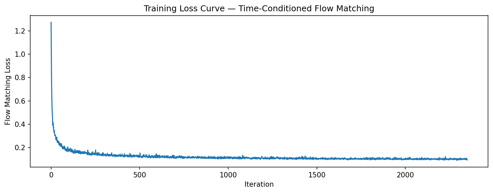
output/partB/2.2_fm_training_loss.png
Starting from pure Gaussian noise, 50 Euler steps integrate the learned velocity field. Results shown after 1 and 10 epochs of training.
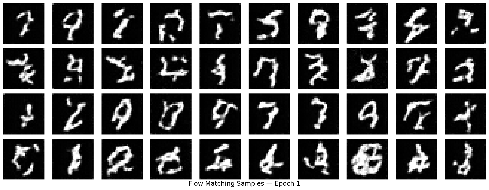
output/partB/2.3_fm_samples_epoch_1.png
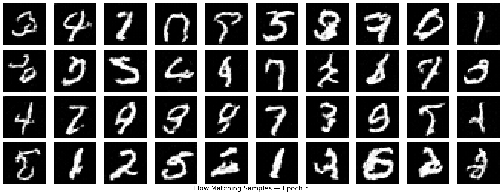
output/partB/2.3_fm_samples_epoch_5.png
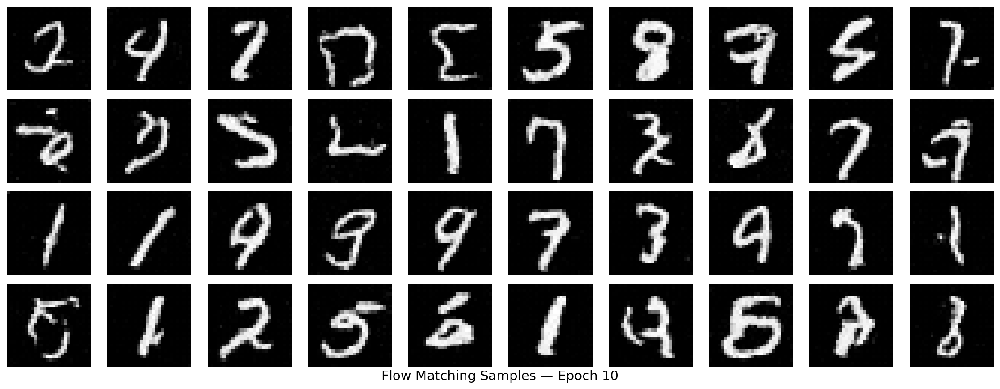
output/partB/2.3_fm_samples_epoch_10.png
The UNet is extended with class conditioning via one-hot digit labels (0–9), injected through two additional FCBlocks. CFG dropout (puncond = 0.1) enables unconditional generation.
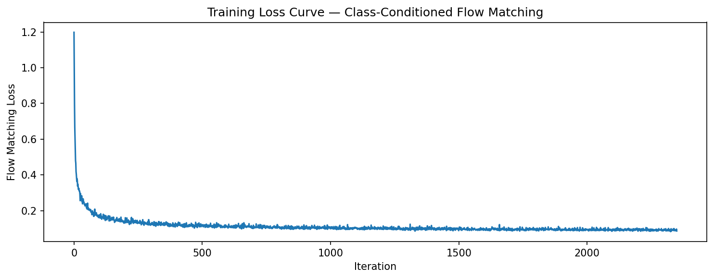
output/partB/2.5_class_fm_training_loss.png
Using classifier-free guidance (γ = 5.0), four instances of each digit 0–9 are generated. Each column = one digit class. Results shown after 1, 5, and 10 epochs.
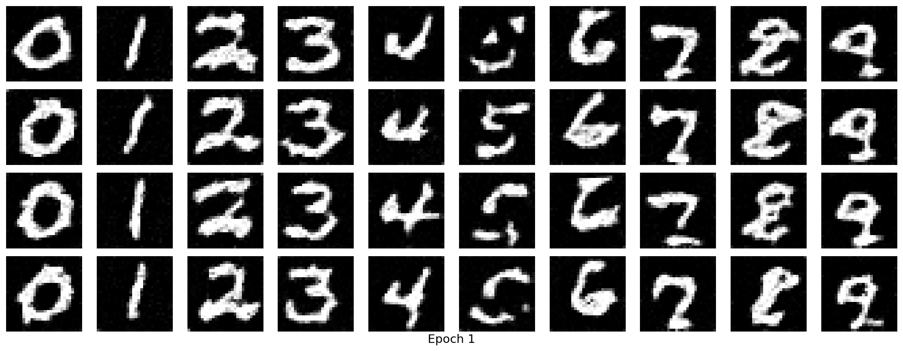
output/partB/2.6_class_fm_samples_epoch_1.png
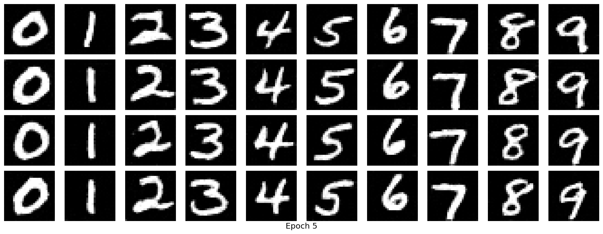
output/partB/2.6_class_fm_samples_epoch_5.png
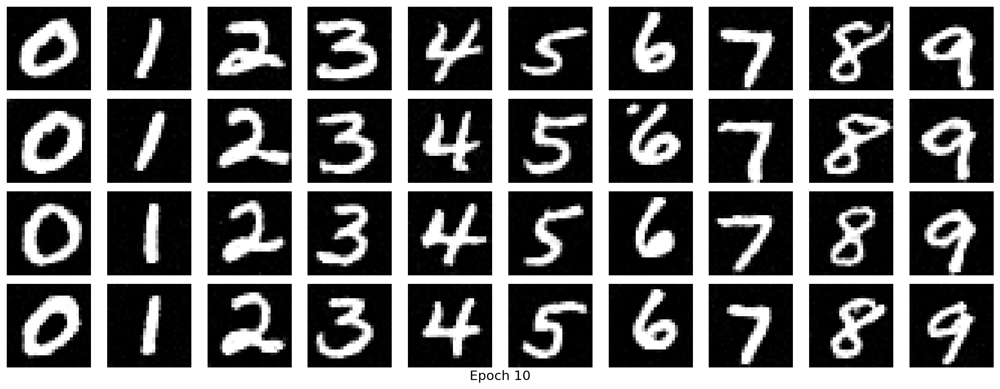
output/partB/2.6_class_fm_samples_epoch_10.png